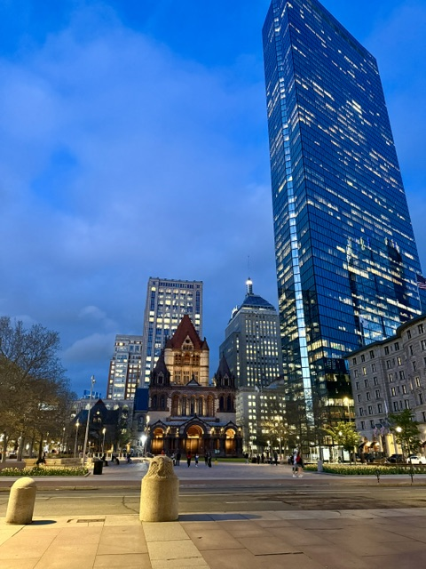

From our Summer Happy Hour at Democracy Brewing, July 2026.

Monthly meetups for content designers, UX writers, content strategists, and content-adjacent folks across the Boston area.
A running record of what we've talked about, made, and celebrated together.


Two content designers who wanted more community in Boston, so they built one.

15+ years of content design and technical writing experience across ed tech, cybersecurity, and civic tech.

10+ years of startup and agency experience building brand voices and content strategies across industries.